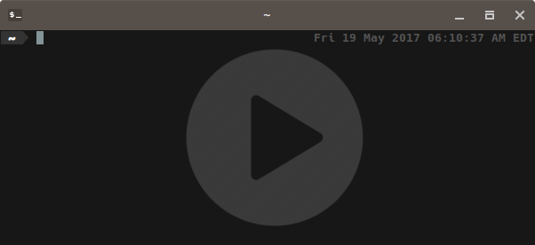

Configuring Ansible on the Pi Cluster
In my previous post, I pieced together my pi cluster, and installed variations of Ubuntu 16.04 Server on each of its nodes. With the cluster built, I quickly needed an easy way to maintain and interact with the system as a whole. This, is where Ansible comes in. In this post, I will walk through the steps I took to setup Ansible on my Cluster.
Ansible
Ansible is an open source, configuration management and automation system. It is written in Python, and financially backed by Red Hat. It simplifies the management of groups of computers, through the use of modules (standalone units of work. for example, apt, ping, rpm, etc). Ansible is script-able using simple YAML files, known as playbooks, that define a set of orchestration tasks for one or many computers. These scripts can be edited and version controlled, creating a simple infrastructure as code setup.
Setting up the User Account
When Ansible executes commands on the PIs, it will do so from the user-account (ryan) that I setup in the last post. However, many of these commands will require Root privledges. While I previously setup sudo and added theryan account to the sudo group ... it required that I manually enter my password. Ansible did not like this, so I had to update the sudo configuration to allow the ryan account to run sudo commands with out a password. To do this, I opened the sudoers file:sudo visudo
and added the following line to the end of the file:
ryan ALL=(ALL:ALL) NOPASSWD: ALL
I repeated this on each of the nodes, and afterwards was no longer promted for a password when running sudo commands. This made Ansible happy.
Setup SSH Keys
Well... almost happy.Ansible's main method of communication is via ssh, which by default, prompts me for a password when connecting. Ansible really hates passwords. So, I had to configure ssh to use keys instead. Honestly, this is proabaly a good step to do regardless, now that the ryan account no longer uses a password when running sudo. To setup key-based logins, I appended the contents of my main computer's ssh public key*, to each pi's authorized_keys file. This can all be done using a magic one-line pipe command (x3, one for each pi):
cat ~/.ssh/id_rsa.pub | ssh pi0 "cat >> ~/.ssh/authorized_keys"
cat ~/.ssh/id_rsa.pub | ssh pi1 "cat >> ~/.ssh/authorized_keys"
cat ~/.ssh/id_rsa.pub | ssh bpi "cat >> ~/.ssh/authorized_keys"
*Note: If keys are not already generated, they can be created using the command:
ssh-keygen
Key Only Login
To help secure access to the PIs (and to get on Ansible's good side), I configured sshd to disable password logins, and only allow connections from clients with approved keys. To disable password authentication, I opened the/etc/ssh/sshd_config file, found the line containing # PasswordAuthentication yes, changed the yes to a no, and unncommented it by removing the #.While I was in the sshd_config file, I also set PermitRootLogin to no, for good measure.
Lastly, I reset the sshd service and repeated the steps for each pi:
sudo systemctl restart sshd
Afterwards, I was unable to login to the PIs from a computer with unauthorized ssh keys.

But, I was still able to loging from the authorized computer.
Install Python
The last issue Ansible complained about was that it needed python installed on the Pis. Like everything else, the Bananna Pi already had this setup, but I had to install it on the two Raspberry Pis. It was simple enough:sudo apt-get install python
Install Ansible
I have a confession. So, you know how I have been fun and cheery by anthropomorphisizing Ansible, saying that it was "happy" or "frusterated" during the previous steps? That wasn't true. I made it up. Ansible wasn't actually installed yet. So... to install Ansible...
sudo eopkg it ansible
I used eopkg because I am currently running Solus. You might use sudo apt-get install ansible, sudo dnf install ansible, or pacaur -S ansible depending on whatever distro you are using.
That's all for setting up Ansible. I'll cut this post off here, but in the next post, I'll walk through the steps on how to get Ansible to be useful.